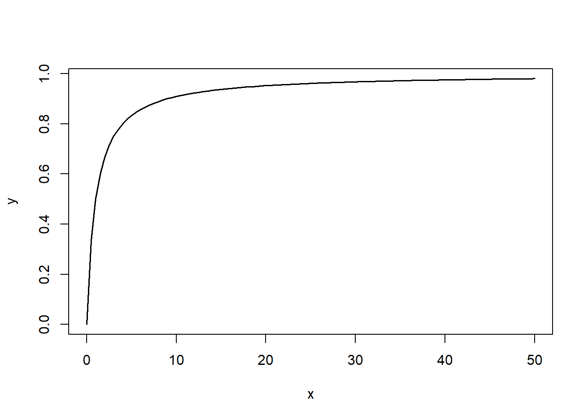

4 Probabilidades
4.1 Probabilidades elementales: Las mates
La probabilidad de un suceso es, básicamente, un número entre 0 y 1 (o, si lo preferís, un porcentaje entre 0% y 100%) que mide la expectativa de que se dé este suceso.
En este curso vamos a definir la probabilidad de un suceso como la proporción (la fracción, el porcentaje) de sujetos de una población (o a veces de una muestra, dependerá del contexto) en los que se da el suceso. Esta proporción mide la “probabilidad” de que si escogemos al azar un sujeto de la población, se dé en él el suceso.
Ejemplo:La probabilidad de que al lanzar una moneda al aire salga cara es la proporción de la población de lanzamientos de esta moneda en los que sale cara.
En casos MUY sencillos, cuando todos los resultados posibles tienen la misma probabilidad, esta proporción coincide con la fracción de veces en que se da este suceso en el conjunto de resultados posibles y por lo tanto se puede calcular con la famosa regla de Laplace: \[ \text{Probabilidad}=\frac{\text{Casos favorables}}{\text{Casos posibles}} \]
Por ejemplo:
La probabilidad de que salga cara al lanzar una moneda equilibrada al aire es 1/2 (casos favorables, 1; casos posibles, 2; los dos resultados tienen la misma probabilidad por definición de moneda equilibrada).
Pero la probabilidad de que un hijo sea varón no es 1/2, aunque solo haya dos sexos cromosómicos Es la proporción de hijos varones en el total de todos los hijos, que se estima en alrededor del 51.22%.
O más exageradamente, la probabilidad de que una mujer de entre 17 y 27 años sea miope no es 1/2, aunque solo haya dos resultados posibles: ser miope y no serlo. Esta probabilidad es la proporción de miopes en la población formada por todas las mujeres de esa franja de edad, que, en España en 2018, se estimaba en un 65.4% según un informe de la Asociación Visión y Vida.
4.1.1 Álgebra de conjuntos
Vamos a repasar muy rápidamente las notaciones y las propiedades de las operaciones de conjuntos, para poder usar este lenguaje en lo que sigue.
Sean \(A\) y \(B\) subconjuntos (en el contexto de la teoría de probabilidades, se los llama sucesos) de un conjunto \(\Omega\) (nuestra población o, en el lenguaje de la teoría de probabilidades, el espacio muestral).
\(A\cup B\) es la unión de \(A\) y \(B\): el conjunto formado por los elementos de \(\Omega\) que pertenecen a \(A\) o a \(B\) (o a ambos).
\(A \cap B\) es la intersección de \(A\) y \(B\): el conjunto formado por los elementos que pertenecen simultáneamente a \(A\) y a \(B\).
Corresponde a la conjunción del lenguaje natural.
\(A^c\) es el complementario de \(A\): el conjunto formado por los elementos de \(\Omega\) que no pertenecen a \(A\).
Corresponde a la negación del lenguaje natural.
\(A-B=A \cap B^c\) es la diferencia “\(A\) menos \(B\)”: el conjunto formado por los elementos de \(A\) que no pertenecen a \(B\).
Por lo tanto, \(A^c=\Omega-A\).
Diremos que \(A\) y \(B\) son disjuntos, o incompatibles, cuando \(A\cap B=\emptyset\), donde \(\emptyset\) es el conjunto vacío, el conjunto que no tiene elementos.
Diremos que \(A\) está contenido, o incluido, en \(B\), y lo denotaremos por \(A\subseteq B\), cuando todo elemento de \(A\) pertenece a \(B\). Para recalcar que \(A\) está estrictamente contenido en \(B\) (que está contenido en \(B\) pero no es igual a \(B\)) usaremos \(A\subsetneq B\).
Consideremos la población \(\Omega\) formada por los estudiantes de una clase, y sean \(A\) el subconjunto formado por la mujeres de esa clase y \(B\) el subconjunto formado por los estudiantes de esa clase que llevan gafas.
\(A\cup B\) es el conjunto formado por las mujeres de la clase o los estudiantes de la clase que llevan gafas (o ambos).
\(A \cap B\) es el conjunto formado por las mujeres de la clase que llevan gafas.
\(A^c\) es el conjunto formado por los hombres de la clase.
\(A-B\) es el conjunto formado por las mujeres de la clase que no llevan gafas.
\(A\subseteq B\) significa que todas las mujeres de la clase llevan gafas.
4.1.2 Algunas fórmulas básicas
Hemos definido la probabilidad \(P(A)\) de un subconjunto (suceso) \(A\) de una población (espacio muestral) \(\Omega\) como la fracción de los sujetos de \(\Omega\) que pertenecen a \(A\). A partir de esta definición se deducen, las propiedades siguientes:
- Para todo suceso \(A\), \(0\leqslant P(A)\leqslant 1\).
Un subconjunto \(A\) de \(\Omega\) no puede representar ni una fracción negativa ni una fracción mayor que 1 de los sujetos de \(\Omega\).
\(P(\Omega)=1\) y \(P(\emptyset)=0\) (recordad que \(\emptyset\) es el conjunto vacío).
Si \(A\) y \(B\) son dos sucesos disjuntos, entonces \(P(A\cup B)=P(A)+P(B)\).
Si no hay ningún sujeto que pertenezca simultáneamente a \(A\) y a \(B\), entonces el número de sujetos que pertenecen a \(A\) o a \(B\) es la suma de los que pertenecen a \(A\) y de los que pertenecen a \(B\). Entonces, dividiendo por el número total de individuos de la población \(\Omega\) (su cardinal), obtenemos que la fracción de los sujetos que pertenecen a \(A\) o a \(B\) es la suma de las fracciones de los que pertenecen a \(A\) y de los que pertenecen a \(B\).
Más en general, si \(A_1,A_2,\ldots,A_n\) son sucesos disjuntos dos a dos, entonces \[ P(A_1\cup A_2\cup \cdots \cup A_n)=P(A_1)+P(A_2)+\cdots +P(A_n). \]
\(P(A-B)=P(A)-P(A\cap B)\).
\(P(A^c)=1-P(A)\).
Es decir, la fracción de los sujetos que no pertenecen a \(A\) es 1 menos la fracción de los que sí pertenecen a \(A\).
- Si \(A\subseteq B\), entonces \(P(A)\leqslant P(B)\).
Si \(A\) está contenido en \(B\), la fracción de los sujetos que pertenecen a \(A\) es menor o igual que la de los que pertenecen a \(B\).
- \(P(A\cup B)=P(A)+P(B)-P(A \cap B)\).
Si queréis contar cuántos sujetos hay en \(A\cup B\), tenéis que añadir a los de \(A\) los de \(B-A\). Dividiendo por el total de la población para pasar a proporciones, esto nos dice que \[ P(A\cup B)=P(A)+P(B-A)=P(A)+P(B)-P(A \cap B) \] donde la segunda igualdad se debe a (5).
Por ejemplo, si en una población hay un 50% de mujeres y un 60% de miopes, y un 35% del total son mujeres miopes, las personas que son mujeres o miopes (recordad, o ambas cosas) forman un 75% de la población: al 50% de mujeres hay que sumarle el 25% de miopes que no son mujeres.
El número de sujetos que pertenecen a \(A\) pero no a \(B\) se obtiene restando del total de sujetos de \(A\) los que pertenecen simultáneamente a \(A\) y a \(B\), es decir, a \(A\cap B\). Dividiendo por el número total de individuos de la población, obtenemos la correspondiente igualdad de proporciones.
Ejemplo:Supongamos que el 0.1% de los donantes de sangre dan positivo en el test de VIH, que el 1% dan positivo en el test de herpes simple (VHS) y que el 0.05% dan positivo en ambos tests.
¿Cuál es la probabilidad de que un donante escogido al azar dé positivo en al menos uno de los dos tests? ¿Y la de que un donante escogido al azar dé positivo en VHS pero no en VIH?
Vamos a poner nombres a los sucesos involucrados en estas preguntas:
\(A\): Dar positivo en VIH. Sabemos que \(P(A)=0.001\).
\(B\): Dar positivo en VHS. Sabemos que \(P(B)=0.01\).
\(A\cap B\): Dar positivo en los dos. Sabemos que \(P(A\cap B)=0.0005\).
\(A\cup B\): Dar positivo en al menos uno de los dos. Es lo que queremos calcular en la primera pregunta.
Por la propiedad (8): \[ P(A \cup B) =P(A)+P(B)-P(A\cap B)=0.001+0.01-0.0005=0.0105 \] La probabilidad de que un donante escogido al azar dé positivo en al menos uno de los dos tests es del 1.05%.
\(B-A\): Dar positivo en VHS pero no en VIH. Es lo que queremos calcular en la segunda pregunta.
Por la propiedad (5), \[ P(B-A)=P(B)-P(A\cap B)=0.01-0.0005=0.0095 \] La probabilidad de que un donante escogido al azar dé positivo en VHS pero no en VIH es del 0.95%.
Otra manera de calcular estas probabilidades sin necesidad de recordar fórmulas sería:
Tomar como referencia una población de un tamaño concreto.
Calcular en esta población cuántos individuos pertenecen a \(A\cap B\) (dan positivo en ambos tests), cuántos a \(A-B\) (positivos en VIH pero no en VHS), cuántos a \(B-A\) (positivos en VHS pero no en VIH) y cuántos a \(A^c\cap B^c\) (negativo en ambos tests) y a partir de ahí calcular todo lo que queramos.
A este método se le suele llamar método de frecuencias naturales (“la cuenta de la vieja” no suena lo bastante científico), y así lo llamaremos nosotros. Pongámoslo en práctica en nuestro caso:
Vamos a tomar una población de referencia de 10,000 donantes
¿Por qué este número? Veamos, fijaos en que la proporción de sujetos en \(A\cap B\) es del 0.05%, es decir, 0.0005, y para facilitar los cálculos nos gustaría que todos los números que nos salieran fueran enteros, para no liarnos con decimales. Como 0.0005·10000=5, parece que 10,000 nos va a valer.
Los sujetos de \(A\) son el 0.1% de la población: 10
Los sujetos de \(B\) son el 1% de la población: 100
Los sujetos de \(A\cap B\) son el 0.05% de la población: 5
En resumen: \[ \begin{array}{r|c|c|c} & A\ (\text{VIH}+) & A^c \ (\text{VIH}-) & \text{Total} \\ \hline B\ (\text{VHS}+) & 5 & & 100 \\ \hline B^c\ (\text{VHS}-) & & & 9900 \\ \hline \text{Total} & 10& 9990 & 10000 \\ \end{array} \]
Entonces, los sujetos de \(A-B\) serán los de \(A\) menos los de \(A\cap B\): 5
Y los sujetos de \(B-A\) serán los de \(B\) menos los de \(A\cap B\): 95
Por ahora ya tenemos: 5 sujetos positivos en VIH y en VHS; 5 positivos en VIH y negativos en VHS; y 95 positivos en VHS y negativos en VIH. En total, 105 sujetos. El resto serán negativos tanto en VIH como en VHS.
Por lo tanto, los sujetos de \(A^c\cap B^c\) serán 10000-105=9895.
Obtenemos la tabla de frecuencias siguiente: \[ \begin{array}{r|c|c|c} & A\ (\text{VIH}+) & A^c \ (\text{VIH}-) & \text{Total} \\ \hline B\ (\text{VHS}+) & 5 & 95 & 100 \\ \hline B^c\ (\text{VHS}-) & 5 & 9895 & 9900 \\ \hline \text{Total} & 10& 9990 & 10000 \\ \end{array} \]
Y ahora, cambiando “probabilidad” por “proporción”, ya podemos calcular lo que queramos.
¿Cuál es la proporción de sujetos que dan positivo en algún test?
Hay 105 sujetos en la tabla que dan positivo en algún test: los 10 positivos en VIH y los 95 positivos en VHS y negativos en VIH. Por lo tanto, su proporción es de 105/10000=0.0105.
¿Cuál es la proporción de sujetos que dan positivo en VHS pero no en VIH?
Hay 95 sujetos en la tabla que dan positivo en VHS y negativo en VIH, por lo que su proporción es de 95/10000=0.0095.
4.1.3 Odds
En algunos contextos, las probabilidades se presentan en forma de odds. La traducción más común en castellano es momios, pero se usan otras: posibilidades, oportunidades, ocasiones… Aquí usaremos odds.
Las odds de un suceso \(A\) son \[ \text{Odds}(A)=\frac{P(A)}{P(A^c)}=\frac{P(A)}{1-P(A)} \] y por lo tanto nos dicen cuántas veces es más probable \(A\) que “no \(A\)”.
Si \(\text{Odds}(A)=q\), significa que por cada vez que ocurre “no \(A\)”, ocurre \(q\) veces \(A\). Por ejemplo, si las odds de suspender una asignatura son 2/3, significa que:
Por cada estudiante que aprueba, hay 2/3 de estudiante que suspenden.
Por cada 3 estudiantes que aprueban, hay 2 que suspenden.
De cada 5 estudiantes, 3 aprueban y 2 suspenden.
2 de cada 5 estudiantes suspenden.
La probabilidad de suspender es de un 40%.
Importante
A veces, que unas odds valgan \(a/b\) se expresa diciendo que son \(a\!:\!b\), y se lee “\(a\) a \(b\)”. Por ejemplo, las odds de suspender anteriores son 2:3, es decir, 2 a 3.
Algunos ejemplos de odds a partir de probabilidades:
- Si \(P(A)=0.2\), \(\text{Odds}(A)=0.2/0.8=0.25\).
- Si \(P(A)=0\), \(\text{Odds}(A)=0\).
- Si \(P(A)=0.5\), \(\text{Odds}(A)=1\).
- Si \(P(A)=1\), \(\text{Odds}(A)=\infty\).
Como son un cociente de dos probabilidades, las odds de un suceso son siempre mayores o iguales que 0 y pueden tomar cualquier valor entre 0 e \(\infty\), ambos incluidos.
Ejercicio Si lanzamos un dado equilibrado de 10 caras numeradas del 0 al 9:
¿Qué valen las odds de sacar un 3?
¿Qué valen las odds de sacar un múltiplo de 3?
Si sabemos las odds de \(A\), podemos calcular la probabilidad \(P(A)\): \[ \begin{array}{rl} \text{Odds}(A)=\dfrac{P(A)}{1-P(A)}\!\!\!\! & \Longrightarrow \text{Odds}(A)-\text{Odds}(A)P(A)=P(A)\\ & \Longrightarrow P(A)=\dfrac{\text{Odds}(A)}{1+\text{Odds}(A)} \end{array} \]
Por lo tanto, dos sucesos tienen la misma probabilidad si, y solo si, tienen las mismas odds.
Observad que la función \[ x\mapsto\frac{x}{1+x} \] es creciente en \(x\):
Como esta es la función que transforma \(\text{Odds}(A)\) en \(P(A)\), deducimos que \[ \text{Odds}(A)>\text{Odds}(B)\Longleftrightarrow P(A)>P(B) \]
\(A\) es más probable que \(B\) si, y solo si, las odds de \(A\) son mayores que las de \(B\).
Como veremos, la manera correcta de presentar los resultados en los estudios de casos y controles es en forma de odds ratios. La odds ratio (razón de momios, de oportunidades…) de dos sucesos \(A\) y \(B\) es el cociente de sus odds: \[ \text{OR}(A,B)=\frac{\text{Odds}(A)}{\text{Odds}(B)} \] Es decir, \(\text{OR}(A,B)\) nos dice cuántas veces son mayores (o menores) las odds de \(A\) que las de \(B\). Su valor es difícil de interpretar en términos de probabilidades excepto por lo que refiere a su relación con 1:
\(\text{OR}(A,B)=1\Longleftrightarrow \text{Odds}(A)=\text{Odds}(B) \Longleftrightarrow P(A)=P(B)\)
\(\text{OR}(A,B)>1\Longleftrightarrow \text{Odds}(A)>\text{Odds}(B) \Longleftrightarrow P(A)>P(B)\)
\(\text{OR}(A,B)<1\Longleftrightarrow \text{Odds}(A)<\text{Odds}(B) \Longleftrightarrow P(A)<P(B)\)
Pero, por ejemplo \[ \text{OR}(A,B)=2 \Longleftrightarrow \text{Odds}(A)= 2\cdot \text{Odds}(B) \hspace{1.2ex} \not\hspace{-1.2ex}\Longleftrightarrow P(A)= 2\cdot P(B) \]
Ejemplo:En un estudio de casos y controles (Y. Nobel et al, Gastroenterology 159 (2020), pp. 373-375) se afirma que
“la presencia de síntomas gastrointestinales se asoció a un incremento del 70% en el riesgo de dar positivo [en el test de COVID-19]: odds ratio, 1.7.”
¿Qué significa esto? Que la odds ratio valga 1.7 significa que las odds de dar positivo en COVID-19 si se tienen síntomas gastrointestinales son 1.7 veces las de dar positivo si no se tienen síntomas gastrointestinales, es decir un 70% mayores. Pero fijaos que estamos hablando de las odds, no del riesgo entendido en el sentido de probabilidad. No tiene por qué ser cierto que la probabilidad de dar positivo en COVID-19 si se tienen síntomas gastrointestinales sea un 70% mayor que si no se tienen síntomas gastrointestinales.
De hecho, en este estudio concreto se obtuvo la tabla de frecuencias siguiente (SG abrevia “síntomas gastrointestinales”) \[ \begin{array}{r|c|c|c} & \text{COVID-19 } + & \text{COVID-19 } - & \text{Total}\\ \hline \text{SG Sí} & 97& 63 & 160\\\hline \text{SG No} & 181 & 175 & 356\\\hline \text{Total} & 278 & 238 & 316 \end{array} \]
Por lo tanto, la proporción de COVID-19 positivos entre los que tuvieron síntomas gastrointestinales fue 97/160=0.606 y la proporción de COVID-19 positivos entre los que no tuvieron síntomas gastrointestinales fue 181/356=0.508. Como 0.606/0.508=1.19, la primera es un 19% mayor que la segunda, no un 70% mayor.
Veamos las odds. Las de ser COVID-19 positivo entre los que tuvieron síntomas gastrointestinales son \[ \frac{97/160}{63/160}=1.54 \] Las de ser COVID-19 positivo entre los que no tuvieron síntomas gastrointestinales son \[ \frac{181/356}{175/356}=1.03 \] La odds ratio es, entonces 1.54/1.03=1.495.
¿Pero no habíamos dicho que la odds ratio les había salido 1.7?
Bueno, sí, lo que les da 1.7 es la odds ratio ajustada, ORa, una odds ratio que se obtiene al descontar la influencia de confundidores en el desenlace.
4.1.4 Probabilidad condicionada
Dados dos sucesos \(A\) y \(B\), con \(P(A)>0\), la probabilidad de \(B\) condicionada a \(A\) es \[ P(B|A)=\frac{P(A\cap B)}{P(A)} \]
Este valor representa la fracción de los sujetos de \(A\) que pertenecen a \(B\); es decir, es la probabilidad de que si ocurre \(A\), entonces también ocurra \(B\).
Ejemplo:Supongamos que en una clase de 20 hombres y 30 mujeres, 15 hombres y 18 mujeres llevan gafas. La tabla de frecuencias correspondiente es
\[ \begin{array}{r|c|c|c} & \text{Gafas} & \text{No gafas} & \text{Total}\\ \hline \text{Mujeres} & 18 &12 & 30\\ \hline \text{Hombres} & 15 & 5 & 20 \\ \hline \text{Total} & 33 & 17 & 50 \\ \end{array} \]
- ¿Cuál es la probabilidad de que un estudiante sea mujer?
Como hay 30 mujeres de un total de 50 estudiantes, esta probabilidad es 30/50=0.6
- ¿Cuál es la probabilidad de que un estudiante lleve gafas?
Como hay 33 estudiantes con gafas de un total de 50 estudiantes, esta probabilidad es 33/50=0.66
- ¿Cuál es la probabilidad de que un estudiante sea mujer y lleve gafas?
Como la probabilidad de ser mujer es 0.6 y la probabilidad de llevar gafas es 0.66, la probabilidad de ser mujer y llevar gafas es el producto: 0.6·0.66=0.396.
¡No! En general, la probabilidad de la intersección NO es el producto de las probabilidades.
Calculémosla bien. Como hay 18 mujeres que llevan gafas de un total de 50 estudiantes, esta probabilidad es 18/50=0.36
- ¿Cuál es la probabilidad de que una mujer lleve gafas?
Como hay 18 mujeres que llevan gafas de un total de 30 mujeres, esta probabilidad es 18/30=0.6. Fijaos que este valor es igual a \[ P(\text{gafas}|\text{mujer})=\frac{P(\text{mujer y gafas})}{P(\text{mujer})}=\frac{18/50}{30/50}=\frac{18}{30} \]
- Escogemos un estudiante al azar. ¿Cuál es la probabilidad de que si es mujer, entonces lleve gafas?
Es la misma pregunta que la anterior, por lo que la respuesta es la misma: 18/30=0.6.
- ¿Cuál es la probabilidad de que un estudiante que lleve gafas sea mujer?
Como hay 18 mujeres que llevan gafas de un total de 33 estudiantes que lleven gafas, esta probabilidad es 18/33=0.545. Fijaos, de nuevo, que este valor es igual a \[ P(\text{mujer}|\text{gafas})=\frac{P(\text{mujer y gafas})}{P(\text{gafas})}=\frac{18/50}{33/50}=\frac{18}{33} \]
Importante
No confundáis:
\(P(B)\): La probabilidad de que un individuo de la población global \(\Omega\) pertenezca a \(B\).
Por ejemplo, si \(B\) es “llevar gafas”, \(P(B)\) es la probabilidad de que una persona lleve gafas. La población en la que calculamos probabilidades es la de todas las personas.
\(P(B|A)\): Probabilidad de que un individuo de \(A\) pertenezca a \(B\).
Por ejemplo, si además \(A\) es “ser mujer”, \(P(B|A)\) es la probabilidad de que una mujer lleve gafas. La población en la que calculamos probabilidades es la de las mujeres.
\(P(A|B)\): Probabilidad de que un individuo de \(B\) pertenezca a \(A\).
Por ejemplo, con las notaciones anteriores, \(P(A|B)\) es la probabilidad de que una persona que lleva gafas sea mujer. La población en la que calculamos probabilidades es la de las personas que llevan gafas.
\(P(B\cap A)\): Probabilidad de que un individuo de la población global pertenezca simultáneamente a \(A\) y a \(B\).
Por ejemplo, con las notaciones anteriores, \(P(A\cap B)\) es la probabilidad de que una persona sea mujer y lleve gafas. La población en la que calculamos probabilidades vuelve a ser todas las personas.